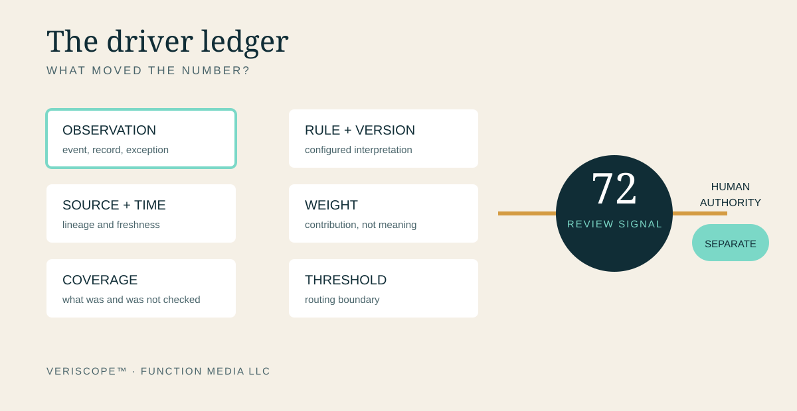
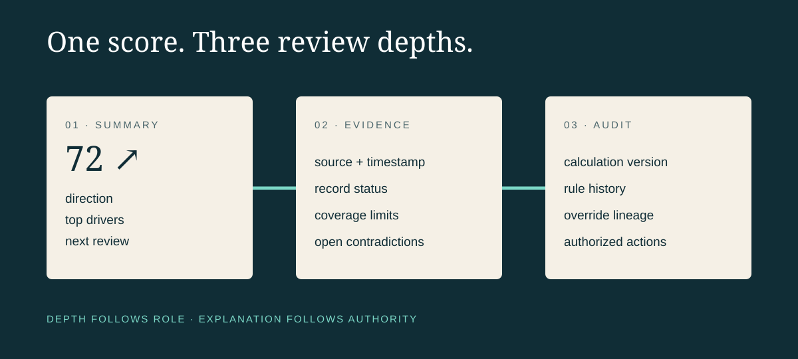

A Score Without Drivers Is Just Decoration
VERISCOPE™ by Function Media LLC | Calibration Edition
The number arrives before the explanation.
A reviewer opens a case and sees 72 in a colored circle. The number looks precise. It suggests that many facts have already been weighed, compared and resolved. But the screen does not say which facts moved the score, what evidence was unavailable, when the calculation last ran or whether 72 authorizes any action at all.
The reviewer has not received a finding. He has received a conclusion-shaped object.
Scores are useful because they compress. A complex record can contain hundreds of events, documents, exceptions and relationships. A well-designed score can help someone decide where to look first. But compression always removes detail. If a system hides what it removed, the convenience of the number becomes a governance problem.
For consequential work, the score is the beginning of review—not the end of it.
Precision is a visual effect
Numbers carry authority even when their construction is weak. Seventy-two feels more considered than “medium concern.” A decimal point feels more scientific than a whole number. A gauge feels more objective than a paragraph.
None of those design choices proves that the underlying measure is valid.
A score can change because a source refreshed, a rule changed, an identifier was corrected, an old record expired or a reviewer resolved a contradiction. It can also change because the system failed to retrieve something. Unless those drivers are visible, two identical scores may describe very different conditions.
That is why VERISCOPE™ treats a score as a navigational signal. It can direct attention toward a record. It should not conceal the evidence that made the signal move.

Every score needs a driver ledger
A driver ledger answers a short set of practical questions:
- Which observations affected the score?
- Which source produced each observation?
- When was that source checked?
- Which rule or configuration translated the observation into weight?
- What information was missing, restricted or contradictory?
- Who may review, override or act on the result?
The ledger does not need to expose confidential material to every user. It does need to preserve enough lineage for an authorized reviewer to reconstruct the result.
Consider a score that rises after three events: an overdue filing, a product discrepancy and an unresolved complaint. The interface should show those as separate drivers, not merely as “risk increased.” The filing may be two hours late because a portal was unavailable. The discrepancy may already be under reconciliation. The complaint may be unverified but time-sensitive. A single number cannot carry all three conditions responsibly.
Weight is not meaning
A scoring model assigns weight. An institution assigns meaning.
If a rule adds twelve points for one event and six for another, those values express a configured priority. They are not natural properties of the world. Someone selected them, tested them and decided where thresholds should sit.
That decision should have an owner, an effective date and a change history. Otherwise, a score can shift while the interface gives the impression that the underlying facts changed.
This distinction matters most at thresholds. A record at 69 and a record at 70 may fall on opposite sides of a routing rule even though the practical difference is tiny. A responsible design makes the threshold visible, explains what it changes and preserves human review where policy requires judgment.
Confidence and authority must remain separate
A system may be highly confident that a pattern exists. That does not mean it has authority to determine the institutional response.
Confidence describes the strength or consistency of an analytical result. Authority describes who is permitted to act. The two can inform each other, but they are not interchangeable.
An alert can be well supported and still require a supervisor. A low-confidence result can still deserve urgent review because the potential consequence is serious. A high score can prioritize attention without proving misconduct, causation or final liability.
VERISCOPE is being developed around that boundary: evidence and scoring can help structure attention; authorized people remain responsible for consequential decisions.
Show what the score cannot see
Coverage is part of the result.
If the system checked four of six expected sources, the score should not look as complete as one built from all six. If a repository was offline, the interface should say so. If access restrictions prevented retrieval, that condition belongs in the record. If the scoring window includes only the previous thirty days, the user should not assume it represents a full history.
This does not require a large warning on every screen. A concise coverage statement can show sources queried, time window, unavailable systems, unresolved identities and last calculation time. The goal is calibrated trust: enough clarity for a reviewer to understand the boundary without drowning in implementation detail.

A useful score can survive questioning
The strongest test is not whether users accept the number. It is whether the number can survive a reasonable challenge.
Why did it rise? Which record contributed? Was that record current? Did a rule change? What happens if the disputed driver is removed? Who approved the threshold? What may the reviewer do next?
If the system cannot answer those questions, the score is decoration. It may still organize a dashboard, but it cannot responsibly anchor a consequential decision.
A reviewable score should support inspection at several depths. The first view can remain simple: score, direction and top drivers. The next view can show source, time and status. An authorized technical or audit view can expose calculation version, rule history and the full evidence chain.
Good design does not force every person to become a data scientist. It gives each role the explanation required for the decision that role is allowed to make.
Calibration is ongoing work
Scoring systems are not finished when the formula runs. They require monitoring.
Teams should examine whether drivers behave as intended, whether certain sources dominate unfairly, whether missing data systematically depresses or inflates results, and whether thresholds create excessive queues or overlook important cases. Overrides and reviewer disagreements are not annoyances to hide; they are feedback about the model, the policy or the available evidence.
The National Institute of Standards and Technology distinguishes transparency, explainability and interpretability as related characteristics of trustworthy systems. Its AI Risk Management Framework also emphasizes ongoing governance, measurement and management rather than a one-time technical check. The U.S. Government Accountability Office’s accountability framework similarly organizes responsible practice around governance, data, performance and monitoring.
Those ideas apply beyond systems marketed as artificial intelligence. Any institutional score that shapes attention should disclose enough about its construction to be governed.
The number should open the record
A score earns trust by pointing back to its causes.
The interface can be elegant. The summary can be fast. The number can be useful. But the path from evidence to weight to threshold to human action must remain available for review.
That is the standard: not a screen crowded with mathematics, and not a mysterious number wearing the costume of certainty. A calibrated signal, attached to its drivers, bounded by its coverage and separated from the authority to act.
Function Media LLC is developing evidence-centered systems that connect source lineage, operational context, configurable rules and human review. VERISCOPE™, SAFEPLATE™ and NORTHLINE™ demonstrate this broader applied-systems direction. No customer deployment or measured outcome is claimed here.
Working with Function Media: Selected institutional pilots, purpose-built systems, sponsored development, licensing, integration and strategic partnerships are considered through Function Media partnerships.
Public sources
- NIST, AI Risk Management Framework.
- NIST AI Resource Center, AI Risks and Trustworthiness.
- U.S. Government Accountability Office, AI Accountability Framework.
- NIST, SP 800-53 Revision 5.